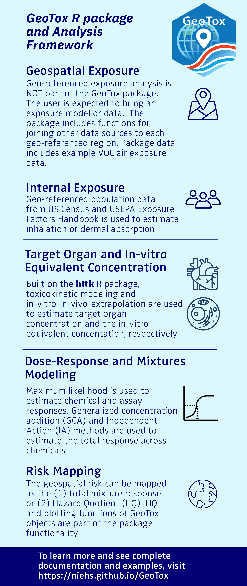

GeoTox open-source R software package for characterizing the risk of perturbing molecular targets involved in adverse human health outcomes based on exposure to spatially-referenced stressor mixtures via the GeoTox framework - otherwise known as source-to-outcome-continuum modeling. The package, methods, and case-studies are described in Messier, Reif, and Marvel, 2025, Human Genomics.
The GeoTox framework was first described in Eccles et al. A geospatial modeling approach to quantifying the risk of exposure to environmental chemical mixtures via a common molecular target. Sci Total Environ. 2023 Jan 10;855:158905.
Installation
install.packages("GeoTox")Development Version
The development version can be installed from GitHub.
#install.packages("pak")
pak::pak("NIEHS/GeoTox")Overview
Figure 1 below shows the steps in the source-to-outcome-continuum or GeoTox modeling framework that is capable in the GeoTox package. blue text nodes represent an object and green text, rounded nodes represent a methodology or function required to go from one to the next. The GeoTox package uses R S3 object-oriented programming to create the GeoTox object. The GeoTox object is a list that contains all of the information required to run the analysis including tracking exposure, assays, dose-response, and geospatial referencing.

Figure 1: Overview of the steps in the GeoTox framework
Getting Started
Please refer to the package website for a detailed description of how to use GeoTox.
Citation
For citation information, please refer to our CITATION file.
Issues and Contributions
To add or edit functionality, open a pull request into the main branch with a detailed description of the proposed changes. Pull requests must pass all status checks, and then will be approved or rejected by the GeoTox maintainers.
Utilize GitHub issues to notify the authors of bugs, questions, or recommendations. Identify each issue with the appropriate label to help ensure a timely response.